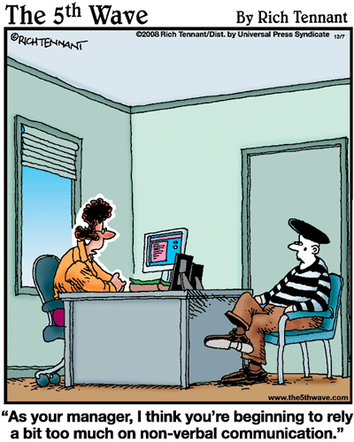
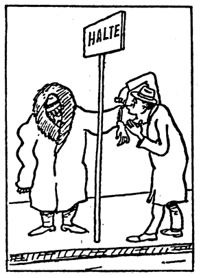
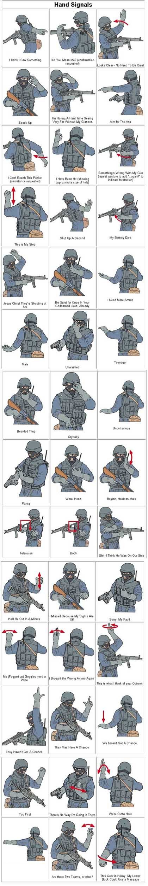
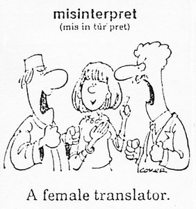

Humor and stories for interpreters: The strange world of the Hearing
David Bar-Tzur
Links updated monthly with the help of LinkAlarm.
[The image above is from http://www.bluesprings.com/~barnes/woodstock2042.htm (Woodstock 69: Swamp man), which is no longer extant.]
 y mother used to think I taught Deaf people until one day we went to Las Vegas together. My mother spoke Polish fluently (she has passed away), but would never teach me so that she could have a secret language to speak to her Mother and sister on the phone and I wouldn't understand. I heard a woman while we were in Las Vegas talking to herself in Polish (or maybe Russian, they are very similar and I can't tell the difference) about how her machine wasn't working properly. I asked my mother if she could help her. She interpreted between a casino worker and the Polish woman. At the end of this, I said to my mother, "THAT'S what I do for a living with Deaf people." Finally she understood!
y mother used to think I taught Deaf people until one day we went to Las Vegas together. My mother spoke Polish fluently (she has passed away), but would never teach me so that she could have a secret language to speak to her Mother and sister on the phone and I wouldn't understand. I heard a woman while we were in Las Vegas talking to herself in Polish (or maybe Russian, they are very similar and I can't tell the difference) about how her machine wasn't working properly. I asked my mother if she could help her. She interpreted between a casino worker and the Polish woman. At the end of this, I said to my mother, "THAT'S what I do for a living with Deaf people." Finally she understood!
- David Bar-Tzur.
 facebook. Yes I'm a sign language interpreter. No, I don't read Braille. You will need to join facebook.
facebook. Yes I'm a sign language interpreter. No, I don't read Braille. You will need to join facebook.
Bjarminatorinn. (2008, June 27). Her Proplem Is Deaf People., A clip from an icelandic tv show called Svalbardi. Its a funny clip about a woman that has a proplem with deaf people funny as shit but it only has english subtitle and the spoken language is icelandic sorry about the text. Webmaster: Note the subtext (read: guilty conscience). We hearing peopler are so strange!
A clip from an icelandic tv show called Svalbardi. Its a funny clip about a woman that has a proplem with deaf people funny as shit but it only has english subtitle and the spoken language is icelandic sorry about the text. Webmaster: Note the subtext (read: guilty conscience). We hearing peopler are so strange!
HEMA is a Dutch department store. The first store opened on November 4, 1926, in Amsterdam. Now there are 150 stores all over the Netherlands. HEMA also has stores in Belgium, Luxemburg, and Germany Take a look at HEMA's product page. You can't order anything from it and it's in Dutch, BUT just wait a couple of seconds and watch what happens. If you're hearing, make sure you have the audio on. If you're Deaf, you will just miss the sound effects, but you will still enjoy it!

 everal centuries ago, the Pope decreed that all the Jews had to convert or leave Italy. There was a huge outcry from the Jewish community, so the Pope offered a deal. He would debate with the leader of the Jewish community. If the Jews won, they could stay in Italy, if the Pope won, they would have to leave.
everal centuries ago, the Pope decreed that all the Jews had to convert or leave Italy. There was a huge outcry from the Jewish community, so the Pope offered a deal. He would debate with the leader of the Jewish community. If the Jews won, they could stay in Italy, if the Pope won, they would have to leave.
The Jewish people met and picked the aged but wise Rabbi Moishe to represent them in the debate. However, as Moishe spoke no Italian, and the Pope spoke no Yiddish, they all agreed that it would be a "silent" debate. On the chosen day, the Pope and Rabbi Moishe sat opposite each other for a full minute before the Pope raised his hand and showed three fingers. Rabbi Moishe looked back and raised one finger.
Next, the Pope waved his finger around his head. Rabbi Moishe pointed to the ground where he sat.
The Pope then brought out a communion wafer and a chalice of wine. Rabbi Moishe pulled out an apple. With that, the Pope stood up and declared that he was beaten, that Rabbi Moishe was too clever, and that the Jews could stay.
Later, the Cardinals met with the Pope, asking what had happened. The Pope said, "First, I held up three fingers to represent the Trinity. He responded by holding up one finger to remind me that there is still only one God common to both our beliefs. Then, I waved my finger to show him that God was all around us. He responded by pointing to the ground to show that God was also right
here with us."Finally, I pulled out the wine and wafer to show that God absolves us of all our sins. He pulled out an apple to remind me of the original sin. He had me beaten and I could not continue."
Meanwhile the Jewish community was gathered around Rabbi Moishe. "How did you win the debate?" they asked. "I haven't a clue," said Rabbi Moishe. "First the Pope said to me that we had three days to get out of Italy , so I gave him the finger. Then he tells me that the whole country would be cleared of Jews,
and I said to him, we're staying right here." "And then what?" asked a woman. "Who knows?" said Rabbi Moishe, "He took out his lunch, so I took
out mine."

"Bus stop"
y singing voice is so terrible - deaf people refuse to read my lips.
- Stan Boardman, British stand-up comedian
 o show you how dense hearing people can be about Sign Language (and I am talking about myself!), the first time I saw Sign Language, at age 26, I was on the subway in New York City. Some of the train cars were so old that in the summer they left the doors from one car to the next car (front and back) open to let the wind in to cool down the car. There were two Deaf men sitting across from me on the car and I did not yet know about Sign Language. Because of the noise of the wheels against the track it was nearly impossible to hear someone speaking to you. These two men signed to each other on the train. I thought that they had invented their own system of communication just for when they were in noisy areas!
o show you how dense hearing people can be about Sign Language (and I am talking about myself!), the first time I saw Sign Language, at age 26, I was on the subway in New York City. Some of the train cars were so old that in the summer they left the doors from one car to the next car (front and back) open to let the wind in to cool down the car. There were two Deaf men sitting across from me on the car and I did not yet know about Sign Language. Because of the noise of the wheels against the track it was nearly impossible to hear someone speaking to you. These two men signed to each other on the train. I thought that they had invented their own system of communication just for when they were in noisy areas!
- David Bar-Tzur.
 nineteenth century cure for deafness
nineteenth century cure for deafness
DEAFNESS.--IF RECENT, TO CURE--IF NOT, TO RELIEVE-- Hen's oil 1 gill; and a single handful of the sweet clover raised in gardens; stew it in the oil until the juice is all out, strain it and bottle for use.
Where deafness is recent, it will be cured by putting three or four drops daily into the ear, but if of long standing, much relief will be obtained if continued a sufficient length of time.
2. Much has been said in France about sulphuric ether, first tried by Madam Cleret, or Paris; and, although she lost her reason by the elation of feeling brought on, no doubt, by the honor given her for the discovery, yet the continued trial of the article does not give the satisfaction which had been hoped for, from its first success.
CYC 2006 Groups 7 & 8 Sign Language. Webmaster: Maybe I'm wrong, but I think it's cool that more and more hearing people are discovering sign language. I can't understand the spoken language here, but it's clear that the kids aren't sure what they're doing. I still think it is cool that they are experimenting and playing with signs.
Webmaster: Maybe I'm wrong, but I think it's cool that more and more hearing people are discovering sign language. I can't understand the spoken language here, but it's clear that the kids aren't sure what they're doing. I still think it is cool that they are experimenting and playing with signs.
The Late Night Weather 27th September [2007]. The Weather Angels honour deaf awareness week. [Webmaster: An interpreter in very scanty clothes to macth the theme. Don't think you would see this in the U.S.!]
igning blunders (Warning: X-Rated)
1. A deaf lady was speeding and was pulled over by a policeman. The policeman came up to her door and asked to see her drivers license and registration. Since the lady could not speak, she gestured that she was deaf. The policeman confidently signed, "I KNOW SIGN LANGUAGE, MAY I SEE YOUR LICENSE (signing VAGINA). Outraged, the lady took off speeding again. Confused, the policeman raced after her again, and succeeded in pulling her over for a second time. When he reached her door, he signed, "WHY DID YOU LEAVE... WHAT DID I DO WRONG?" The lady embarrassingly signed, "YOU WANT SEE MY VAGINA !!!!!!
2. (From New Zealand:) That reminds me of an advertising company in Auckland tried to make a 'sign' for the city and ended up signing "Vagina" and "Aids". When this came to their attention... they dropped the "signs"....
3. When i was in high school I taught a class in sign lauguage. One of my teacher's aides signed popcorn wrong, because she signed it with her middle fingers. I wanted to leave the room but i had to tell her to look at what she was doing. All the class laughed and joked about it.
4. I was teaching ASL one day, and 11 year old girl was trying to remember the sign for "keep." But she signed the "f***" sign instead. I tried not to laugh, and said no no, do it this way (showing her correct sign for keep.) I must have looked weird getting all red on my face and when she said that LOL
5. That reminds me of an episode of "Good Morning Miami" where they signed VAGINA for HEART. LOLOL
6. I remember, I taught sign language to a student at College. May I have some ketchup? I taught him sign for period instead of ketchup. Few weeks later, he signed "please pass the period" to Deaf student. Then the student was stunned and stared at awkward student learning sign language. A student why did you look stunned ? Deaf student said, oh welll. it mean period.. a woman who have pms. A student approached me.. Oh Dear... I owe you a big time. I was laughed so hard. I love to pick on my friend. He never forgot this every moment. Now, he works full-time legal interpreter various courts, attorneys, etc.... He is big successful.
- AllDeaf.com.
WAT's Sign Language.

Image above from alldeaf.com.
signing moment
Recently terping in a room near some new construction (20 feet away)....hard to hear the teacher sometimes due to drilling and forklifts etc......break time, so the client and I step outside for fresh air.......watching the construction folks running back and forth doing what they do best, we're chatting about life and pity them working in the mud....one fellow turns and SIGNS:
today, fine, mud, none......yesterday lousy, why....rain+++
The client and I almost can't believe what we're seeing.
Fellow continues and says
my friend 5 years past taught to me ASL .....forget??(raised eyebrows)..me never
made our day...ya just never know when or where... just sharing the moment.
Peace tim
- Tim Bigelow
 ere's a excerpt from a story
by Robert Fisk:
ere's a excerpt from a story
by Robert Fisk:
A Polish journalist in Karbala saw just how easily human contact can break down. "The American guards are greeting passers-by with a loud 'Salaam aleikum' [peace be with you]. Some young Iraqi boys with a donkey and cart say something in Arabic and suddenly, together, they run their fingers across their throats.
"'Motherf*****!' shout the Marines, before their translator explains to them that the boys are just expressing their happiness at the death of Saddam Hussein's sons ..."
Everybody needs a good interpreter :-)
- quoted by Dan Parvaz
 n my IPP we were taught to wear solid colors that contrast the color of our skin... I do often wear black, and there are consequences. On more than one occasion I've been approached and met with a grateful smile and the words, "Thank you, Father, for coming to do the sign language. It was beautiful." I just smile and bless them and move on to the next. :-) I love my job.
n my IPP we were taught to wear solid colors that contrast the color of our skin... I do often wear black, and there are consequences. On more than one occasion I've been approached and met with a grateful smile and the words, "Thank you, Father, for coming to do the sign language. It was beautiful." I just smile and bless them and move on to the next. :-) I love my job.
- Chris Owens
( esponse to the letter above.) I was once asked if I had been to a funeral. When I said it was business, he then asked if I was a mortician :)
esponse to the letter above.) I was once asked if I had been to a funeral. When I said it was business, he then asked if I was a mortician :)
- Lezlie Wendt
y nephew was explaining to me that his father's friend was deaf and
had to speak with his hands. I asked my nephew how his father's friend
shouted in sign language. His reply: "He doesn't have to, he doesn't have any kids."
 eethoven wrote music even though he was deaf. He was so deaf he wrote loud music. He took long walks in the forest even when everyone was calling for him. Beethoven expired in 1827 and later died for this.
eethoven wrote music even though he was deaf. He was so deaf he wrote loud music. He took long walks in the forest even when everyone was calling for him. Beethoven expired in 1827 and later died for this.
- Student blooper, posted to uk.education.staffroom by Liz Crewe
 or an exam in our sign-language class, we had to attend a group lunch and conduct ourselves as if we were deaf. We could use only sign language and had to pretend we could not hear. We were so persuasive that our two waitresses fell for the charade and began talking freely. Discussing the attractiveness of a certain young man in our class, one waitress suggested the other should ask him for a date. "Don't worry," she pressed. "You can overcome the 'language barrier.'" "Oh, I'm not bothered by that," the other young woman replied. "It's those quick hands that worry me."
or an exam in our sign-language class, we had to attend a group lunch and conduct ourselves as if we were deaf. We could use only sign language and had to pretend we could not hear. We were so persuasive that our two waitresses fell for the charade and began talking freely. Discussing the attractiveness of a certain young man in our class, one waitress suggested the other should ask him for a date. "Don't worry," she pressed. "You can overcome the 'language barrier.'" "Oh, I'm not bothered by that," the other young woman replied. "It's those quick hands that worry me."
- James M. Rathburn

earing Sign Language.
After driving up and down several lanes, I finally found a parking spot at the shopping mall. I noticed another man driving slowly in the same direction, and since he was closer, I gave him the "Are you going to park there?" look. His responding gestures were very complicated. First he shook his head, next he pointed to me, that at the parking space, and then at himself, his watch, and the mall. Finishing off, he frowned, raised his palms upwards, and shrugged.
Once I parked, I walked over to the driver to make sure he didn't want the space. "You must be single," he replied. "If you were married, you would've known that was the universal sign for 'Go ahed and take the spot, I'm waiting for my wife."
- John Lucvinko, Reader's Digest, February 1992.
he following is Intrepre-Therapy for me - read at your own risk I am just
sharing not asking for a response to the following. . .
ps. . . I was convinced to interpret the LA Philharmonic one time. They have a
program that brings in 5000 kids to the Hollywood Bowl to listen to a
children's concert of classical music. So. . . yours truly will try
anything once. I have never been so mortified by an experience. Standing
on stage, looking at 30- 40 deaf kids who could care less and trying to
make something make sense. Trying to find something that would make the
sounds I was hearing have meaning to those kids was one of the most
difficult things I have done. And believe me, i have spent a good part of
the past forty-something years trying to make sound have meaning to my
parents, friends, and relatives. This was the worst. Other than waiting to
see if Lauren Bacall would finally get her Oscar, that was the longest hour
of my life. The kids slept while their teachers wept with rapturous tears
of joy at the beauty of my "interpreting". That afternoon in my car I
wept. The kicker was the Thank You note I got signed by all the deaf kids.
- Gary R Sanderson
Phonics with Sign Language. An example of Deaf education.
CartoonStock.com: Deaf. Click on the cartoons to enlarge.
n Israel, a beard is more important than three deaf lives
During the first Gulf War in 1991, an experiment was made of distributing beepers to deaf persons in order to alert them to take shelter against scud [missile] attacks. The experiment was successful, and the Assoc. of the Deaf has been lobbying ever since then to make beepers a part of the civilian defense arsenal. This attempt was unsuccessful, due to budgetary considerations. On the other hand, some ultra-orthodox Jews with political clout successfully lobbied to have the civilian defense command issue to ultra-orthodox Jews more expensive gas masks (with blowers) so that they'll not have to shave off their beards. In other words, due to political influences, the priorities in the defense establishment were modified so that ultra-orthodox beards would get adequate protection, but not the lives of deaf persons.
In Ma'ariv [an Israeli newspaper] of Feb. 5, 1998, it was written that the price of an inexpensive gas mask is 350 NIS [New Israeli Shekels = $95], and the price of a gas mask with a blower is more than 2000 NIS [$540]. On the other hand, the cost of a beeper for alerting a deaf person is 430 NIS [$116]. From the above data, it is possible to compute the cost of an ultra-orthodox Jew's beard in terms of lives of deaf persons.
Present alternative: gas mask with blower for 2000 NIS [$540]
Cheaper alternative: regular gas mask for 350 NIS [$95]
rechargeable electronic shaving machine for 350 NIS [$95] (It must be issued together with the gas mask because beard-valuing ultra-orthodox Jews have no use for shaving machines in normal days.)
Difference in price: 1300 NIS [$351]
The price of beepers for three Deaf persons: 430 x 3 = 1290 NIS [$349]
Conclusion: 1 ultra-orthodox beard > [is worth more than] 3 deaf lives. Q.E.D. [Which was to be proved.]
P.S.: According to the Jewish religion, "pikuach nefesh" [saving lives] has higher priority than keeping beards.
- Omer Zak, February 6, 1998
doctor thought he had the perfect solution to deafness: Stop deaf people from having children. Then someone told him this was all well and good but that only 5 to 10% of deafness is inherited and that a better way to do away with deafness was to stop hearing people from having children. The doctor lost his interest in doing away with deafness.
 ou are deaf and are breaking the law if:
ou are deaf and are breaking the law if:
You wore a hearing aid while boarding an airplane, in the Year 1958! It was against Federal regulations for air passengers to wear hearing aids while riding on an airplane. Fortunately the law was repealed in 1959.
Sign Language put to good use. They are not mute but why use sign language? Find out why.
Petrone Stratiy, A. (1999). You think DEAF people have problems? This DVD features internationally-known performer Angela Stratiy in a humorous one-woman comedy show on hearing people, based on her "research," and her perspectives on how Deaf people survive in the Hearing world.
Signs of Satan. Horned Hand or The Mano Cornuto:
This gesture is the Satanic salute, a sign of recognition between and allegiance of members of Satanism or other unholy groups. Well-known people showing off the hand-signal which represents Satan.
Return to the table of contents for "Humor and stories for interpreters".

Home